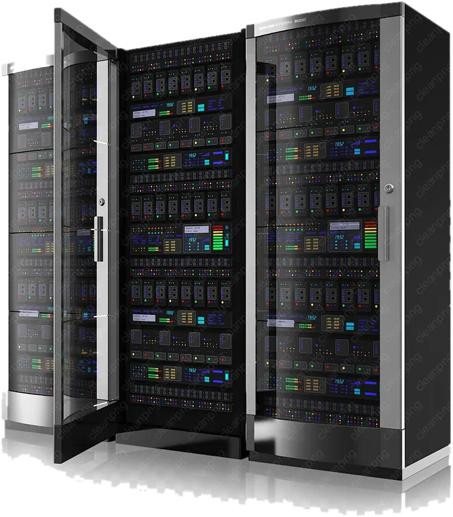

Gestión de equipos al final de su vida
ITAD: retiramos tus equipos y decidimos qué hacer con cada uno: borrado seguro, recuperación de valor (asset recovery), reutilización o reciclaje.
ITAD · Destrucción certificada de datos · Decommissioning de centros de datos
ITAD, destrucción certificada de datos y decommissioning de centros de datos, coordinados por BlackRack Services. Cuéntanos qué equipos quieres retirar o destruir: buscamos entre proveedores certificados, elegimos la mejor opción, coordinamos todo y te entregamos los certificados.
La mejor solución del mercado, sin tener que gestionar a varios proveedores.
Desde una retirada puntual hasta el cierre completo de un centro de datos.
ITAD: retiramos tus equipos y decidimos qué hacer con cada uno: borrado seguro, recuperación de valor (asset recovery), reutilización o reciclaje.
Borrado seguro (secure data erasure) y destrucción física de discos, servidores y móviles, con certificado por dispositivo.
Data center decommissioning: desmontamos racks, servidores y cabinas por fases, sin parar tu actividad.
Hardware disposal y server disposal en una o varias sedes, con transporte precintado y seguro.
Comparamos empresas certificadas y elegimos la que mejor encaja contigo.
IT recycling: los equipos en buen estado vuelven a usarse y el resto se recicla con gestores autorizados.
Tú cuentas lo que necesitas. Nosotros hacemos el resto.
Qué equipos son, cuántos, dónde están y para cuándo. Con una solicitud es suficiente.
Comparamos empresas certificadas que cubran tu zona y tu tipo de equipo.
Te presentamos una propuesta clara con precio, plazo y el motivo de la recomendación.
Coordinamos la retirada, la destrucción y el reciclaje, y te entregamos todos los certificados.
Borramos o destruimos cada dispositivo según lo que necesite y te damos un certificado de cada uno.
Planificamos el desmontaje por fases, retiramos servidores, racks y cabinas, y nos aseguramos de que ningún dato sale de tus instalaciones.

Lo que puede tener una segunda vida, la tiene. Lo que no, se recicla con gestores autorizados y conforme a la normativa de residuos electrónicos (RAEE).
Los equipos en buen estado vuelven al mercado después de un borrado certificado, y así alargan su vida útil.
Los materiales se recuperan a través de gestores autorizados, en lugar de acabar como residuo.
Recibes el certificado de reciclaje y el destino de cada residuo, listo para tus informes de sostenibilidad.
Datos sensibles y hardware de alto valor, tratados con la misma disciplina en cada sector.
Cierres, migraciones y vaciado de salas, planificados por fases.
Programas de renovación y retirada de hardware a gran escala en varias sedes.
Evidencias listas para auditoría de cada dispositivo que sale de tu control.
Infraestructura de red y de núcleo retirada de forma segura, sede por sede.
Tratamiento cuidadoso de soportes que pueden contener datos de pacientes.
Programas de ciclo de vida de portátiles, servidores y almacenamiento para flotas corporativas.
Cobertura en España, con especialistas locales coordinados de forma centralizada. ¿Proyecto fuera de España? Cuéntanoslo y lo estudiamos.
Recogida, destrucción y reciclaje en todo el territorio, con un único contacto.
Retirada y cierre en tus instalaciones, estén donde estén en España.
Varias sedes españolas bajo un único plan y un único contacto.
El IT Asset Disposition (ITAD) es el proceso seguro y documentado de dar de baja equipos informáticos al final de su vida útil. Incluye la recogida, el borrado o la destrucción de datos, la reutilización o reventa cuando es posible y el reciclaje certificado de lo que queda.
La destrucción certificada de datos hace que la información de un dispositivo sea irrecuperable de forma permanente, mediante borrado verificado o destrucción física. Se acredita con un certificado que identifica el dispositivo, normalmente por número de serie, junto con el método empleado y la fecha.
Nos envías una única solicitud con tus equipos, ubicaciones y plazos. Consultamos a partners certificados, te recomendamos la mejor opción técnica y económica, coordinamos el proyecto y te entregamos toda la documentación.
Por ahora operamos en España, con proyectos en una o varias sedes. Si tu proyecto incluye otros países, cuéntanoslo y lo estudiamos.
Sí. Coordinar a varios partners especializados bajo un único plan y un único punto de contacto es la base de nuestro trabajo, así que tú solo gestionas una relación.
BlackRack Services es una plataforma independiente de coordinación de ITAD, destrucción certificada de datos y servicios para centros de datos. Incorporamos a los partners especializados adecuados en cada proyecto y lo gestionamos de principio a fin.
Hacer que la retirada segura de hardware sea sencilla: una solicitud, un contacto responsable y la mejor solución para cada proyecto.
Proveedores verificados y certificados en destrucción de datos, logística, reacondicionamiento y reciclaje, elegidos para cada proyecto.
Un responsable de proyecto coordina a cada partner, calendario y documento, para que tu equipo no tenga que hacerlo.
Proyectos en toda España, coordinados con un único contacto central.
Una capa independiente entre tu equipo y una red de proveedores especializados.
Un responsable de proyecto, desde la primera solicitud hasta el certificado final, aunque intervengan varios partners.
Especialistas verificados en destrucción, logística, reacondicionamiento y reciclaje.
Preparamos el encargo, comparamos y supervisamos a los proveedores por ti, y cumplimos cada entrega en plazo.
Seleccionamos a los partners por las certificaciones y autorizaciones que exige tu proyecto.
Entra una solicitud, sale un dossier de documentación. Tus equipos de IT, seguridad y compras siguen centrados en lo suyo.
Recibirás una propuesta con proveedor, plazo y precio. Sin compromiso.
También puedes escribirnos a info@blackrackservices.com